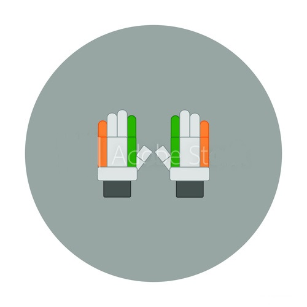

Boss
Kannur Lokesh Rahul
Born
Apr 18, 1992(28 years)
Birth Place
Mangaluru
Role
WK-Batsman
Batting Style
Right Handed Bat
ICC Rankings
Career Stats
| Format | Matches | Innings | Runs | High Score | Avg | SR | 100s | 50s | Catches | Stumpings |
|---|---|---|---|---|---|---|---|---|---|---|
| Test | 36 | 60 | 2006 | 199 | 34.6 | 56.5 | 5 | 11 | 46 | 0 |
| ODI | 32 | 31 | 1239 | 112 | 47.6 | 87.1 | 4 | 7 | 13 | 2 |
| T20I | 42 | 38 | 1461 | 110* | 45.6 | 146.1 | 2 | 11 | 15 | 1 |
| IPL | 67 | 58 | 1977 | 100* | 42.1 | 138.2 | 1 | 16 | -- | -- |
Profile
Kannur Lokesh Rahul, commonly known as KL Rahul, is an Indian international cricketer who plays for Karnataka in domestic cricket and captains Kings XI Punjab in the Indian Premier League. He is a right-handed batsman and a wicket-keeper.
Rahul made his international debut in 2014 and scored his maiden Test century in his second Test match. He became the first Indian to score a century on One Day International debut, and became the third Indian to score a century in all three formats of international cricket.
Rahul made his Test debut in the 2014 Boxing Day Test at the Melbourne Cricket Ground. He replaced Rohit Sharma and was presented with his Test cap by MS Dhoni. He batted at number six and made three runs in the first innings; in the second innings, he played at number 3 and made only 1 run but retained his place for the next Test at Sydney where he opened the innings with Murali Vijay and made 110 runs, his maiden international hundred.